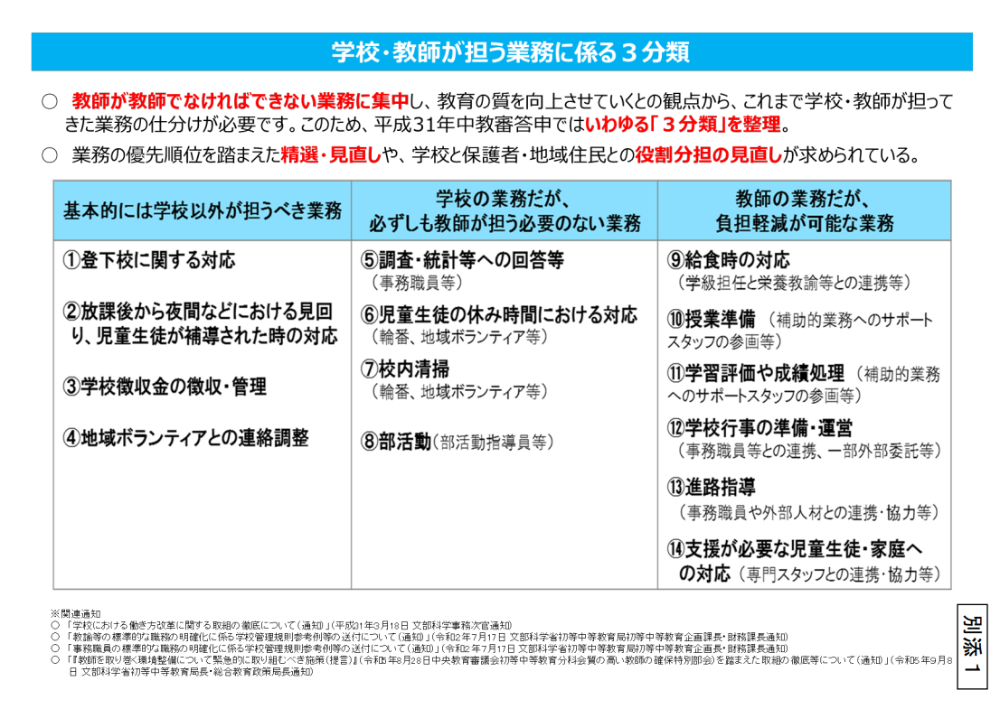

問題はPTAの存在ではなく、学校がPTAの内部事務（加入書類の回収・会費徴収・会計・名簿の提供・連絡配信・教職員の従事）を肩代わりしている点です。以下を、貴自治体の文書で説明できるかをご確認ください。
- 各PTAについて、入会申込みの記録（誰がいつ申し込んだか）を示せるか。
- 学校がPTAに保有個人情報を渡している場合、その利用目的を、学校教育法等の所掌事務の範囲内で特定・公表しているか。「PTA運営のための提供」がその範囲に収まるか。
- 学校徴収金とPTA会費が分離され、PTA会費がPTA自身の口座・名義で徴収されているか。
- 教職員が勤務時間中にPTAの会費徴収・会計に従事している場合、それを公務として説明できるか（説明できないなら公金支出の問題になります）。
- 非会員家庭の児童に、学校生活上の不利益が生じない設計になっているか。
私的団体であるPTAの内部事務（会費徴収・会計・会員管理）は、私人間の委任契約や協定があっても、また「職務専念義務の免除」と呼んでも、公務には変わりません。公務でない以上、そこに勤務時間（公費たる給与）を充てることは、違法な公金支出の問題になり得ます。
個人情報の提供についても、適法な利用目的は学校教育法等の所掌事務の範囲で決まります。個人情報保護委員会の資料も、利用目的の特定は学校業務の根拠法令に基づくとし、同資料は「公立学校とPTAの関係性を方向付ける趣旨ではない」と明記しています。さらに社会教育法第2条は、社会教育を「学校の教育課程として行われる教育活動を除く」ものと定義します。PTAは社会教育関係団体であり、その活動は定義上「教育課程の外」です。したがって、PTA運営のための提供を「学校の教育活動」という利用目的に乗せることは構造的にできません。
これらは個々の職員の落ち度ではなく、長年引き継がれてきた慣行の問題です。分離は、学校・教育委員会を住民監査請求等のリスクから守る作業でもあります。具体的な確認項目・通知文案は、分離原則・通知モデルと本ページ以下をご覧ください。
教育委員会が点検すべき理由
PTAが任意団体であることと、学校・教育委員会が関係部分を点検すべきことは矛盾しません。PTA内部の役員選任や行事内容を教育委員会が支配することはできませんが、学校がPTAの加入案内、書類回収、名簿提供、会費徴収、連絡配信、教職員の事務従事に関わる場合、その関与部分は学校管理上の問題になります。
教育委員会が最初に確認すべきなのは、「PTAが何をしているか」ではなく、「学校が何をしているか」です。学校がPTA入会案内を入学説明会で配布しているのか、担任や学年職員が入会申込書を回収しているのか、学校徴収金の案内にPTA会費が含まれているのか、学校の連絡ツールでPTA通知を配信しているのか、学校が保有する名簿情報がPTAに渡っているのかを、事実として確認する必要があります。
この確認をしないまま「PTAは任意団体なので教育委員会は関与しない」と整理すると、学校が任意団体のために行っている事務、保護者に学校手続と誤認させる運用、個人情報の目的外利用、教職員の服務上の取扱いが見えなくなります。問題の中心は、PTAを否定することではありません。学校とPTAの境界を明確にし、保護者の自由意思と学校運営の公正性を守ることです。
したがって、本ページでは、教育委員会・学校管理職が実務上確認すべき範囲を、入会意思確認、個人情報、会費徴収、教職員関与、施設・配布・連絡ツールの5領域に分けて整理します。各領域について、まず現在の学校関与を把握し、次にその関与を停止・分離・明文化する必要があるかを検討してください。
学校がPTAの加入・徴収・会計・名簿管理に関与している状態は、組織だけでなく校長個人の責任にも及びえます。個人情報の目的外提供（個人情報保護法第69条）、勤務時間中の私的団体事務への従事（職務専念義務・公金支出）、非会員家庭の児童への不利益取扱いなどは、「知らなかった」では説明がつきません。これは個々の校長を責めるためではなく、教育委員会が分離を進めることが、結果的に各校長を法的リスクから守る作業でもある、ということです。詳しい責任論はガイドブック本文に整理しています。
学校教育法第137条を、PTAへの学校利用許可の出発点に置く
PTAへの学校協力を考えるとき、最初に見るべき条文は学校教育法第137条です。同条は、学校施設をPTAに当然使わせるための規定ではなく、学校教育上の支障がない場合に限って、社会教育その他公共のための利用を認め得るという条件付きの規定です。
学校教育上支障のない限り、学校には、社会教育に関する施設を附置し、又は学校の施設を社会教育その他公共のために、利用させることができる。
この条文から分かることは二つです。第一に、学校施設、PTA室、印刷機、児童経由配布、学校連絡ツール、学校ホームページ等の学校資源は、PTAが自動的に使えるものではありません。第二に、使用を認める場合でも、学校教育上の支障がないこと、社会教育その他公共のための利用といえることを、校長・教育委員会が説明できなければなりません。
文部科学省の「公立学校施設の目的外使用に係る留意事項の周知について（通知）」（令和7年3月26日）は、公立学校施設の目的外使用について、学校教育法第137条の趣旨を踏まえ、学校教育上支障のない限り使用可能であることを周知しています。また、同通知は、学校教育上の支障について、物理的支障だけでなく、児童生徒への精神的影響、学校教育方針との関係、現在の具体的支障がなくても将来の教育上の支障が明白に認められる場合を含むものとして整理しています。
したがって、任意加入が確認できない、入会申込記録がない、学校保有名簿に依存している、学校徴収金とPTA会費が混在している、非会員児童への配慮が不明確である、教職員がPTA内部事務を恒常的に担っている。このような状態のPTAに対し、学校施設や学校連絡ツールの利用を当然に認めることはできません。学校利用の可否は、PTAの適正化状況と結び付けて判断する必要があります。
| 137条の条件 | 教育委員会・校長が確認すること | PTA運用で問題になる場面 |
|---|---|---|
| 学校教育上支障のない限り | 児童生徒の平等取扱い、保護者の誤認防止、学校の中立性、個人情報保護、教職員の服務、働き方改革に支障がないかを確認する。 | 非加入家庭の児童が区別される、学校手続とPTA手続が混同される、学校アプリでPTA通知が一斉配信される。 |
| 社会教育その他公共のため | 団体の目的だけでなく、実際の運用が公共性・公平性・透明性を備えているかを確認する。 | 入会申込記録や会費徴収根拠が不明なまま、学校施設を使って加入勧誘、書類回収、集金、役員割当を行う。 |
| 利用させることができる | 「できる」は義務ではなく裁量です。許可条件、使用範囲、文責、個人情報、事故対応、違反時の取消しを明確にする。 | PTA室、印刷機、鍵、掲示、児童経由配布、学校メール、連絡アプリが、明確な許可条件なしに使われている。 |
結論：適正化されていない団体に、学校利用を当然に認めてはならない
学校がPTAに協力するかどうかは、「昔からそうしている」「PTAだからよい」という判断では足りません。任意加入、入会申込記録、個人情報の直接取得、会費徴収の分離、非会員児童への不利益防止、教職員の服務整理、施設使用許可条件が確認できない場合、学校教育上の支障がないとは言いにくくなります。
校長・教育委員会は、PTAに学校施設、学校配布、学校連絡ツール、学校備品、PTA室、印刷機等を利用させる前に、適正化の条件を示す必要があります。条件を満たさない運用については、学校利用を停止し、PTAが団体自身の責任で加入、名簿、会費、連絡、会計、役員選出を完結する形へ移行させるべきです。
公立学校施設の目的外使用に係る留意事項の周知について（通知）PDFを根拠資料として掲載します。
3分類と学校徴収金通知から、PTA事務を学校・教師の仕事にしない
学校教育法第137条が「学校資源を使わせてよいか」を判断する論点であるなら、学校の働き方改革は「学校・教師に担わせてよいか」を判断する論点です。この二つは、PTAと学校の公私分離を考える両輪です。

3分類では、学校・教師が担ってきた業務を、基本的には学校以外が担うべき業務、学校の業務だが必ずしも教師が担う必要のない業務、教師の業務だが負担軽減が可能な業務に分けています。これは「教師が教師でなければできない業務に集中し、教育の質を向上させる」ための整理です。
このうち「基本的には学校以外が担うべき業務」には、登下校に関する対応、放課後から夜間などの見回り、学校徴収金の徴収・管理、地域ボランティアとの連絡調整が含まれています。PTA問題で問題になる会費徴収、名簿管理、役員選出、PTA通知配信、地域ボランティアとの調整は、この分類と正面から関係します。
さらに、令和7年4月30日の文部科学省通知「学校徴収金の公会計化等の取組の一層の推進について」は、学校給食費以外の学校徴収金についても、公会計化して地方公共団体の業務として徴収・管理すること、または学校を経由せず保護者と業者等の間で直接支払い等を行うことを推進しています。教材費や修学旅行費など、学校教育活動に関係する費用でさえ、学校・教師の負担軽減の観点から、学校以外が担う方向へ整理されているということです。
そうであれば、PTA会費のような任意団体の私的会費を、学校徴収金と同じ経路で処理したり、教職員が回収・督促・会計処理をしたりする運用は、少なくとも働き方改革上、優先的に見直すべき学校関与です。PTAとの連携は否定されません。しかし、連携と代行は違います。
| 文科省資料の整理 | PTA問題への意味 | 教育委員会が取るべき対応 |
|---|---|---|
| 学校徴収金の徴収・管理は、基本的には学校以外が担うべき業務に分類されている。 | PTA会費は学校徴収金ではなく任意団体の会費であるため、学校徴収金よりもさらに学校処理から分離すべき性質が強い。 | 学校徴収金案内、口座振替、未納督促、会計処理からPTA会費を外し、PTAが会員から直接徴収する方式へ移行させる。 |
| 令和7年通知は、学校給食費以外の学校徴収金についても、公会計化または保護者と業者等の直接支払いを推進している。 | 学校教育活動に関係する費用でさえ学校・教師の負担軽減のために分離される。PTA会費を学校が扱い続ける合理性はさらに乏しい。 | PTA会費を学校納入金・教材費・給食費等と一体表示しない。保護者に対し、学校徴収金とPTA会費を別物として説明する。 |
| 地域ボランティアとの連絡調整も、学校以外の主体や地域学校協働活動推進員等が中心的に担う方向が示されている。 | PTAとの連絡調整は必要でも、PTAの会計・名簿・役員選出・加入管理を教職員が代行する理由にはならない。 | 学校側の関与は教育活動に必要な連絡調整に限定し、PTA内部事務はPTAの責任者・外部窓口・Webフォーム等に移す。 |
結論：PTAへの協力は、学校・教師の負担軽減と矛盾しない範囲に限る
教育委員会は、PTA関係業務を「学校が担うもの」「学校が連絡調整にとどめるもの」「PTAが自前で担うもの」に分け、各学校に明示する必要があります。会費回収、名簿作成、役員割当、督促、PTA通知作成、学校アプリ配信などを学校が代行しない事項として通知することが、働き方改革と公私分離の双方にかないます。
教育委員会は、法令論の前に「学校が関与した事実」を確認する
PTA内部ではなく、学校関与部分を調べる
教育委員会が最初に行うべきことは、PTA役員の選び方や活動内容を評価することではありません。学校がPTAのために、どの文書を配り、どの書類を回収し、どの名簿を使い、どの会費を徴収し、どの教職員が関与し、どの学校媒体・施設を使わせているかを確認することです。
この切り分けを明示すれば、「PTAは任意団体だから関与できない」という回答では足りなくなります。任意団体の内部自治を尊重しつつ、学校が行っている配布・回収・徴収・情報利用・服務管理・施設利用は、教育委員会と学校管理職の点検対象として残るからです。
各学校に提出を求める資料
学校長への照会は、抽象的な「PTAとの関係」ではなく、実際の文書提出を求める形にします。文書がない場合も、その不存在は重要な確認結果です。
- PTA入会案内、入会申込書、退会届・非加入届
- 学校徴収金案内、PTA会費徴収資料、口座振替依頼書
- 個人情報同意書、学校保有名簿のPTA提供記録
- 学校連絡ツール・学校メールでのPTA配信記録
- 校務分掌、職専免、兼職兼業、PTA担当者の事務記録
- 学校施設、印刷機、PTA室、鍵管理、使用許可記録
- 寄附採納、物品購入、PTA会費から学校備品を支出した記録
- 非会員家庭・非会員児童への説明、配慮、不利益取扱い防止資料
不存在は「問題なし」ではない
入会申込書が不存在である場合、それは直ちに問題なしを意味しません。むしろ、入会意思確認を行わないまま会員扱い・会費徴収をしていた可能性があります。
委任記録が不存在である場合も、学校がPTA会費徴収に関与した根拠を確認できない可能性があります。個人情報提供記録が不存在である場合は、提供していないのか、記録を残さず提供していたのかを分けて確認する必要があります。
論考：PTA問題は、なぜ教育委員会の所掌なのか
PTAは任意団体であり、教育委員会が内部運営を支配することはできません。しかし、学校がPTAの配布、回収、会費徴収、名簿、連絡ツール、教職員の事務、施設利用に関与している場合、その部分は学校管理上の点検対象になります。この境界を、教育委員会向けの論考として整理しました。
論考を読む教育委員会が通知や全校点検を作るときの資料セット
本ページは、教育委員会が学校関与部分を確認するための入口です。通知案、調査項目、学校から保護者への説明例、入会申込記録モデル、法令・一次資料の確認は、教育委員会向け実務指針ページにまとめています。
全国の自治体に寄せられているPTAに関する市民の声
強制加入・任意加入説明不足・会費徴収・役員強制は、各自治体の公式ページでも繰り返し問題化しています。
PTAに関する相談や苦情は、特定の学校だけの問題ではありません。千葉市・大阪市・横浜市・名古屋市・福岡県をはじめ、各自治体の「市民の声」「市長への手紙」等には、任意加入説明の不足、入会申込書の未整備、学校徴収金とPTA会費の抱合せ、役員強制、学校とPTAの混同が繰り返し現れています。これは、教育委員会がPTA内部を支配すべきという意味ではなく、学校が関与する範囲を制度的に点検すべきことを示しています。
全国の自治体・教育委員会の公式回答（76自治体・111件）は、論点ごとに分類して教育委員会回答データベースに収録しています。 回答データベースで全国の事例を見る →
教育委員会・学校管理職向け点検チェックリスト
- PTA加入は任意であると明記されているか
- 入会申込書を取得しているか
- 未提出者を会員扱いしていないか
- PTA会費を学校徴収金と一体で引き落としていないか
- 学校保有名簿をPTAへ渡していないか
- PTA通知を学校公式ツールで全保護者へ配信していないか
- 非会員児童を区別していないか
- 教職員がPTA会計・徴収・名簿管理を恒常的に行っていないか
- 学校施設利用が学校教育上の支障を生じさせていないか
教育委員会が取るべき基本対応
入会申込書はPTAが直接取得し、未提出者を会員扱いしない運用へ移行します。
学校徴収金とPTA会費を分け、学校保有名簿をPTAへ目的外提供しないことを確認します。
PTA通知を学校公式連絡として全保護者に送る運用は、目的外利用と誤認の観点から確認します。
校務分掌、職専免、兼職兼業、給特法、服務規律との関係を確認します。
PTA加入・退会・非加入を理由に、児童の学校生活上の扱いに差が出ないよう確認します。
PTAだから当然使用可とせず、学校教育上の支障、使用許可、責任範囲を整理します。
根拠法令・行政通知・調査資料
このガイドブックで引用している文部科学省・個人情報保護委員会・横浜市教育委員会の一次資料を、原文PDFを開く前に要点で確認できます。
法令・行政機関・関連団体の公式サイト
下記はすべて公開情報をもとにした実務整理です。法的助言ではなく、自治体ごとの規程確認を前提にしています。

自治体が動き始めた
最先端の是正事例
教育委員会が学校とPTAの関係を制度として点検し、通知や回答で整理を示す例が出ています。ここでは、確認できる資料に基づき、入会意思確認、個人情報、会費徴収、教職員関与、連絡ツール利用を横断して読むための視点を整理します。個別自治体の通知は、そのまま全国一律の結論に置き換えるのではなく、発出主体、対象校、通知本文、添付資料を照合して参照する必要があります。
これらの事例は、全国の教育委員会が是正を進める際の先例として参照できます。
年間是正ロードマップ
——4フェーズで段階的に
適正化は一気に完成させる必要はありません。4フェーズで段階的に進め、各学校が無理なく移行できるよう設計してください。教育委員会通知や回答例を参照する場合も、発出主体、対象校、実施時期、添付資料を確認し、各学校が無理なく移行できる計画に落とし込む必要があります。
- →教委から各学校へ方針通知の発出
- →現状把握のための書類提出要請
- →校長・教頭を対象とした研修の実施
- →5領域ごとの実態調査・整理
- →問題校の特定・優先度付け
- →各PTA会長への方針説明・協議
- →入会届の整備・独自名簿の構築
- →PTA独自口座への会費徴収の切り離し
- →学校アプリのPTA通知配信の停止
- →翌年度入会手続・案内文書の確認
- →是正状況の教委への定期報告
- →好事例の共有・横展開
横浜市通知とされる資料では、段階的な移行を想定した整理が示されています。各自治体が参照する場合は、通知本文、添付資料、対象校、現行性を確認する必要があります。
学校長宛 通知文案
（テンプレート）
教育委員会から各学校長宛に発出する是正通知の文案例です。自治体の実情に合わせて修正の上ご活用ください。
PTA等学校関係団体は、学校とは別個の任意団体であることを明確にし、学校の公的資源・教職員の勤務時間・児童生徒及び保護者の個人情報・学校徴収金その他の学校管理事務と、PTAの団体事務とを分離してください。
PTAへの加入は、保護者本人の明確な意思表示を起点とするオプトイン方式とし、入会の記録をPTAが管理してください。学校在籍・沈黙・退会届未提出・非加入届未提出をもって加入又は会費債務の根拠として扱わないでください。
入学式・入学説明会・学校説明会その他学校の公式行事の中で、PTA加入・会費納入・役員就任・活動参加を当然のものとして説明又は勧誘する運用を行わないでください。PTAが案内する場合は、学校公式プログラムと分離し、PTA文責・任意参加・問い合わせ先を明確にしてください。
学校保護者間連絡ツール・学校メール・校務支援システム・学校名義の配布物を、PTA加入・会費徴収・役員選出・未納確認その他PTA内部事務のために使用しないでください。PTAの案内は、PTAが自ら管理する連絡導線で行ってください。
教職員が勤務時間中に、PTA会費の徴収・未納確認・督促・返金・会計処理・PTA名簿作成・役員選出・広報・物品購入その他PTA固有の事務に従事する運用は停止してください。
PTA会員の減少を理由として、PTA会費を協力金・寄付・学校支援金その他の名目に置き換え、全保護者から事実上徴収する運用を行わないでください。学校に必要な経費は、公費・学校徴収金・正規の寄附採納等、学校側の制度で整理してください。
各学校長は、上記について点検し、是正が必要な事項及び分離に向けた工程を○月○日までに教育委員会へ報告してください。不明な点は担当課（○○課 ℡○○○-○○○○）まで問い合わせてください。
横浜市通知とされる資料の内容を参考に作成しています。通知本文や掲載中の教育委員会回答は教育委員会の回答ページから確認できます。